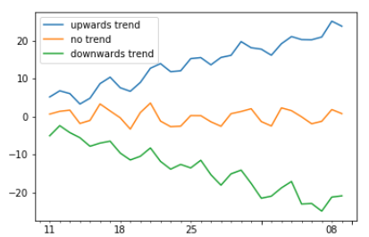
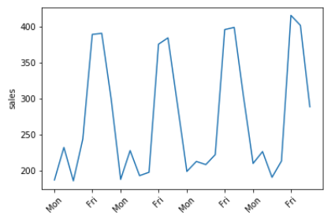

¿Alguna vez has tratado de predecir el futuro? Lo que se avecina es un misterio que normalmente solo se resuelve esperando. En este artículo, dejara de esperar y aprenderá a usar los poderosos modelos de la clase ARIMA para pronosticar el futuro. Aprenderá a usar el paquete statsmodels para analizar series de tiempo, construir modelos personalizados y pronosticar bajo incertidumbre. ¿Cómo se movera el mercado de valores en las próximas 24 horas? ¿Como cambiaran los niveles de CO2 en la próxima década? ¿Cuántos terremotos habrá el próximo año? aprenderás a resolver todos estos problemas y más.
Modelos ARMA
Vamos adentrarnos directamente y aprender sobre las propiedades más importantes de las series temporales. Aprenderá sobre la estacionariedad y como esto es importante para los modelos ARMA. Aprenderá como probar la estacionariedad a simple vista y con una prueba estadistica estandar. Finalmente aprenderá la estructura básica de los modelos ARMA y la usara para generar algunos datos ARMA y ajustar un modelo ARMA.
Series temporales y Estacionariedad
Los datos de series temporales están en todas partes en este mundo. Se utilizan en una amplia variedad de campos. Hay muchos conjuntos de datos para los que nos gustaría poder predecir el futuro. Conocer el futuro de las tasas de obesidad podría ayudarnos a intervenir ahora por la salud pública; predecir las demandas de energía de los consumidores podría ayudar a que las centrales electricas funcionen de manera más eficiente; y predecir como cambiara la población de una ciudad podría ayudarnos a construir la infraestructura que necesitamos.
Comencemos examinando una serie de tiempo. Podemos cargar una serie temporal desde csv usando pandas. Aquí establecemos el índice como la columna de fecha (index_col) y analizamos la fecha en el tipo de dato decha y hora (parse_dates)
import pandas as pd import matplotlib.pyplot as plt df = pd.read_csv("candy_production.csv",index_col ="fecha", parse_dates =True)df
IPG3113N
fecha
1972-01-01
85.6945
1972-01-02
71.8200
1972-01-03
66.0229
1972-01-04
64.5645
1972-01-05
65.0100
...
...
2017-01-04
107.4288
2017-01-05
101.9209
2017-01-06
104.2022
2017-01-07
102.5861
2017-01-08
114.0613
548 rows × 1 columns
Tendencia
Una caracteristica importante de una serie de tiempo es su tendencia. Una tendencia positiva es una línea que generalmente se inclinan hacia arriba: los valores aumentan con el tiempo. Del mismo modo, una tendencia negativa es donde los valores disminuyen.

Estacionalidad
Otra característica importante es la estacionalidad. Una serie temporal estacional tiene patrones que se repiten a intervalos regulares, por ejemplo ventas altas todos los fines de semana

Ciclicidad
Por el contrario, la ciclicidad es donde hay un patrón repetitivo pero no un periodo fijo
Ruido Blanco
El ruido blanco es un concepto importante en series temporales y modelos ARIMA. El ruido blanco es una serie de mediciones, donde cada valor no esta correlacionado con los valores anteriores. Puede pensar en esto como lanzar una moneda, el resultado de un lanzamiento de moneda no depende de los resultados de lanzamiento anteriores. De manera similar, con el ruido blanco, el valor de la serie no depende de los valores anteriores.